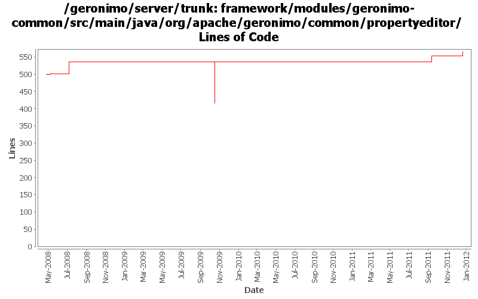

[root]/framework/modules/geronimo-common/src/main/java/org/apache/geronimo/common/propertyeditor

| Author | Changes | Lines of Code | Lines per Change |
|---|---|---|---|
| Totals | 14 (100.0%) | 201 (100.0%) | 14.3 |
| djencks | 7 (50.0%) | 130 (64.7%) | 18.5 |
| genspring | 1 (7.1%) | 35 (17.4%) | 35.0 |
| gdamour | 1 (7.1%) | 34 (16.9%) | 34.0 |
| jdillon | 3 (21.4%) | 2 (1.0%) | 0.6 |
| xuhaihong | 2 (14.3%) | 0 (0.0%) | 0.0 |
GERONIMO-6240 register some more property editors
11 lines of code changed in 1 file:
GERONIMO-6240 Make several base geronimo functions (kernel, deployer, etc) DS services and make the car-maven-plugin take advantage of that. Server assembly doesn't work yet, builds framework.
0 lines of code changed in 2 files:
GERONIMO-5705 Track: Encryption logic for connectionPassword attribute in ldap realm, patch from Yi Xiao.
35 lines of code changed in 1 file:
GERONIMO-6058 Replace StringBuffer usage with StringBuilder
0 lines of code changed in 2 files:
GERONIMO-4916 step 2 move sandbox osgi framework into trunk
119 lines of code changed in 2 files:
GERONIMO-4916 step 1 remove old framwork
0 lines of code changed in 2 files:
Fix a classloader clash happening when a WADI clustered application is
deployed: Tribes classes were loaded by the configurations
org.apache.geronimo.configs/tomcat6//car and
org.apache.geronimo.configs/wadi-clustering//car and should only be loaded
by the wadi-clustering configuration.
Add a org.apache.geronimo.configs/tomcat6-no-ha//car configuration, which
imports org.apache.geronimo.configs/tomcat6//car and hides the Tribes classes.
When a WADI clustered application is built, the tomcat6 configuration is
removed from the clustered application ancestor list and replaced by
tomcat6-no-ha. Tribes classes are now loaded by wadi-clustering.
34 lines of code changed in 1 file:
More loggers back to statics
2 lines of code changed in 1 file:
(GERONIMO-3985) Use SLF4J as the primary logging facade for Geronimo
0 lines of code changed in 2 files: